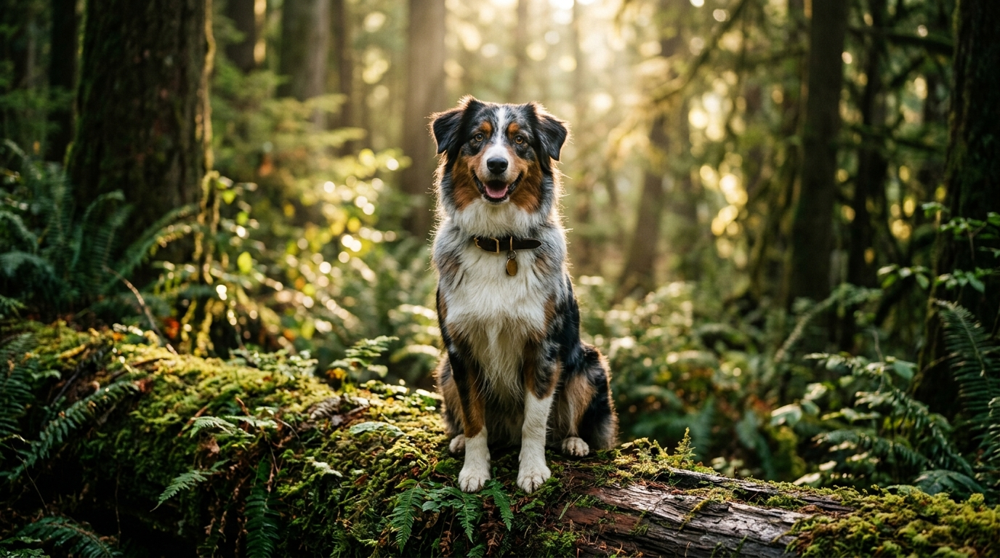
Transforme as Reações do Seu Cão
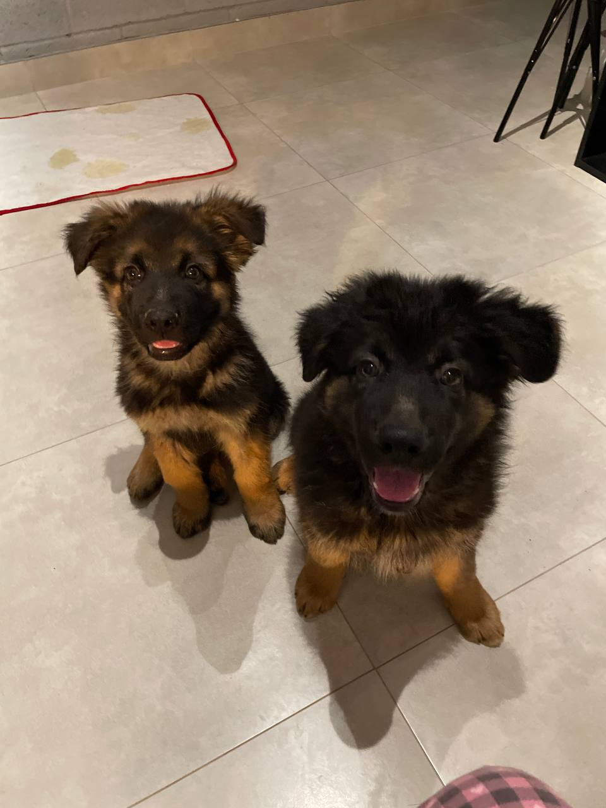
Construa Confiança, Disciplina e Harmonia com Treinamento Profissional
Sem intimidação e sem atalhos mágicos. Uma metodologia fundamentada em ciência do comportamento e reforço positivo para gerar resultados duradouros.
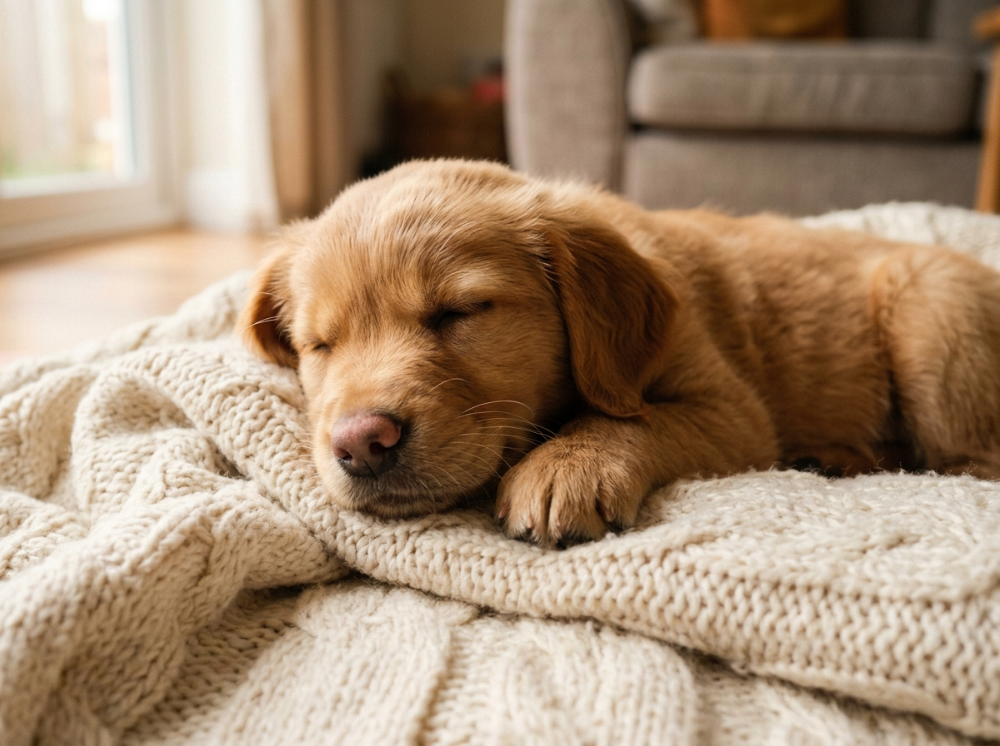
Atendimento Profissional em Comportamento Canino
Cada cão e família possuem necessidades únicas. Conheça nossos pilares de atuação:
Correção Comportamental
Reatividade, latidos para campainha, medo de barulhos e ansiedade com estratégias respeitosas.
Obediência & Passeio Leve
Caminhadas prazerosas sem puxar a guia, atenção ao tutor e autocontrole em ambientes externos.
Início Forte com Filhotes
Adaptação ao novo lar, rotina certa do xixi e cocô, socialização precoce e prevenção de mordidas.
Nossos resultados evidenciados por indicadores
Mais de meia década dedicados ao estudo de comportamento e bem-estar animal em Mato Grosso e online.
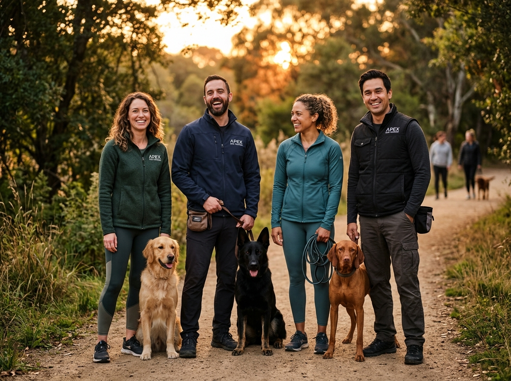
Nossa equipe e método unem conhecimento científico de ponta e vivência prática com todas as raças e desafios.
Como transformamos a rotina de cada cão
Histórias reais de tutores que superaram desafios complexos com consistência e apoio especializado.
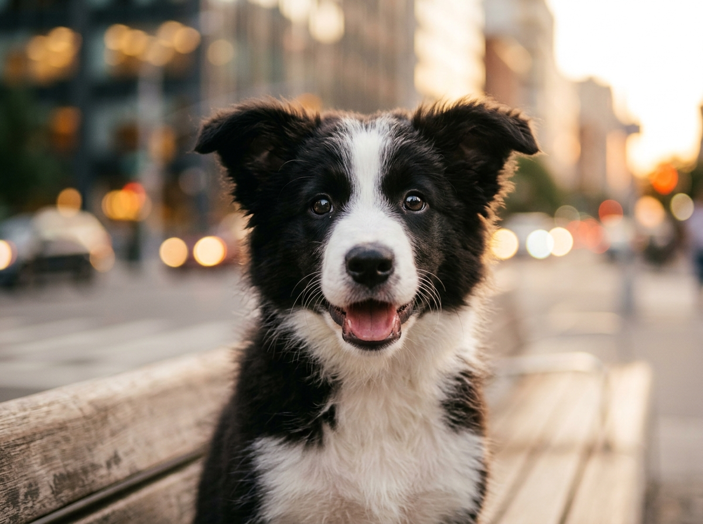
Como o filhote Thor aprendeu a obedecer de primeira
Thor era agitado, mordia calcanhares e ignorava chamados no quintal. Em poucas semanas com reforço positivo, tornou-se focado e atento aos sinais da família.
Conversar sobre este caso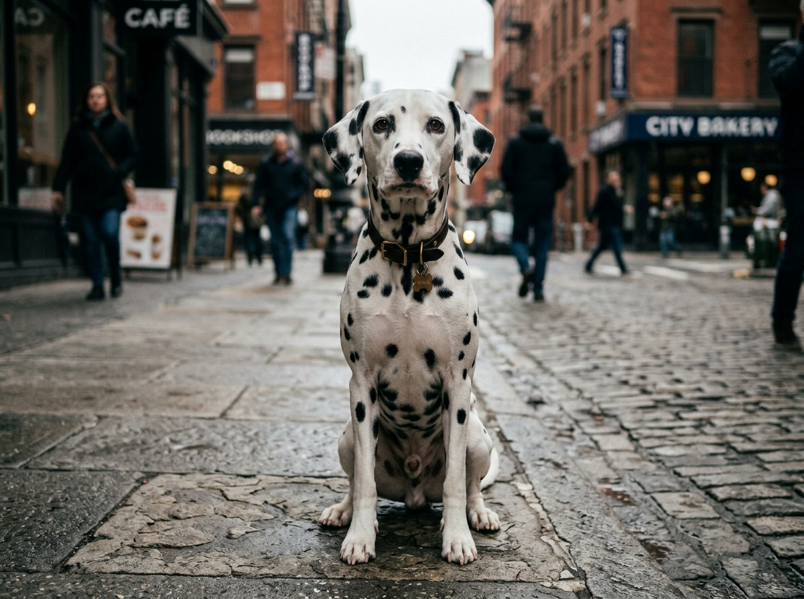
Como Jerry superou o estresse da mudança de cidade
Após a mudança para apartamento em Cuiabá, Jerry latia para qualquer ruído de corredor e andava sobressaltado. A adequação da rotina e enriquecimento ambiental devolveram a segurança.
Conversar sobre este caso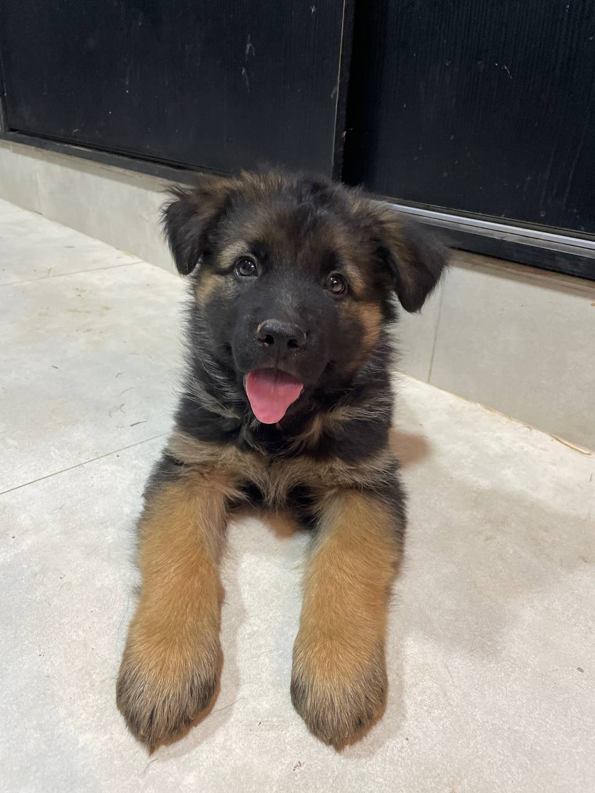
Como a cachorrinha Bonya aprendeu a socializar com calma
Insegura com visitas e outros cães nos passeios, Bonya avançava por puro medo. Com aproximações graduais e recompensas certas, aprendeu a ignorar estímulos e curtir a caminhada.
Conversar sobre este caso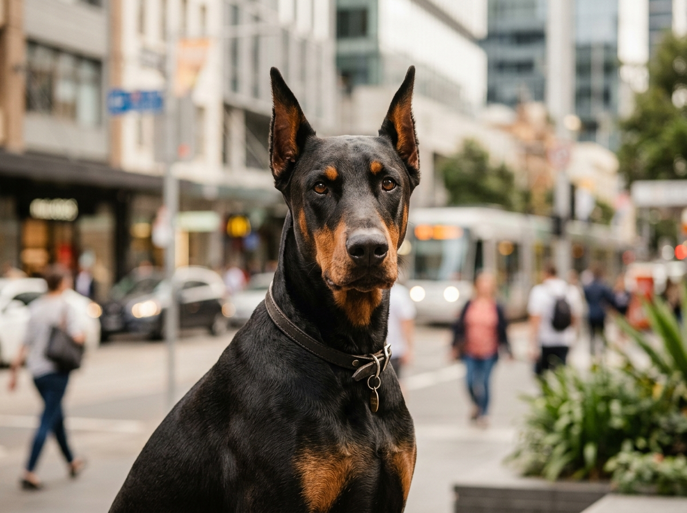
Como Grey aprendeu a responder no primeiro chamado
Com muita força e energia alta, Grey arrastava o tutor na rua e entrava em frenesi ao ver outros cães. Desenvolvemos autocontrole e conexão sólida com a guia.
Conversar sobre este casoO estresse e a reatividade de Bruno transformavam o dia a dia e cada caminhada em caos desgastante. Com o plano estruturado, a rotina virou calma e conexão.
Avaliamos os gatilhos específicos de cada caso e ensinamos a família a liderar com clareza, empatia e segurança.
Um caminho estruturado para um comportamento calmo
Três pilares fundamentais que constroem harmonia real e permanente na vida da sua família.
Passos claros adaptados às necessidades de cada cão
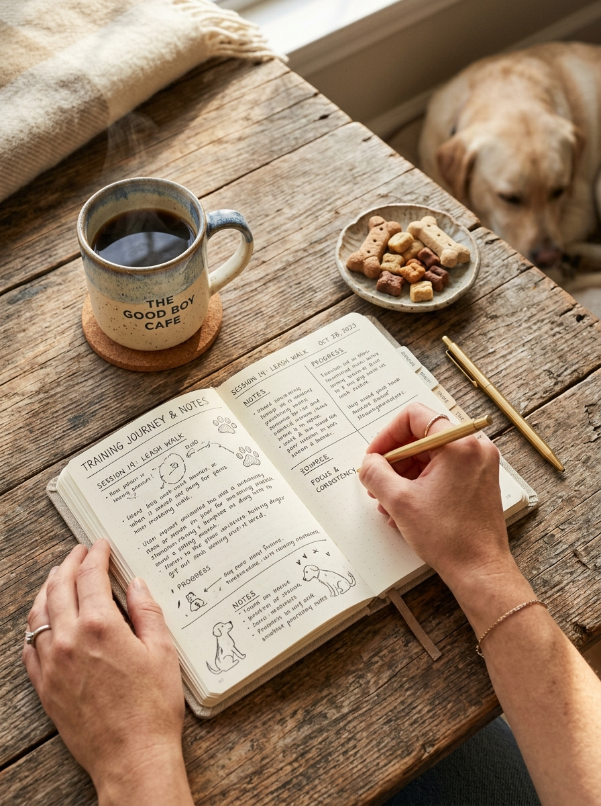
Iniciamos identificando gatilhos e padrões de comportamento. Desenvolvemos um plano sob medida para um progresso consistente e sem pressa.
Reforço positivo gera mudanças sustentáveis
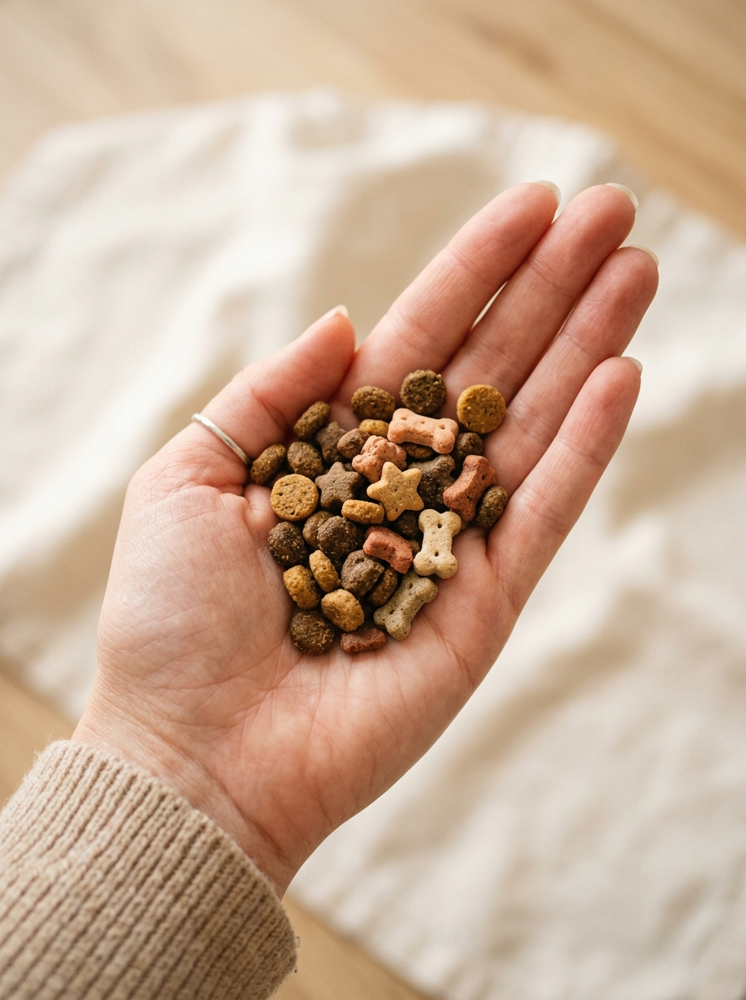
O treinamento gentil baseado em recompensas substitui o estresse pelo prazer em aprender, tornando o cão cooperativo por vontade própria.
Construindo confiança entre cão e tutor
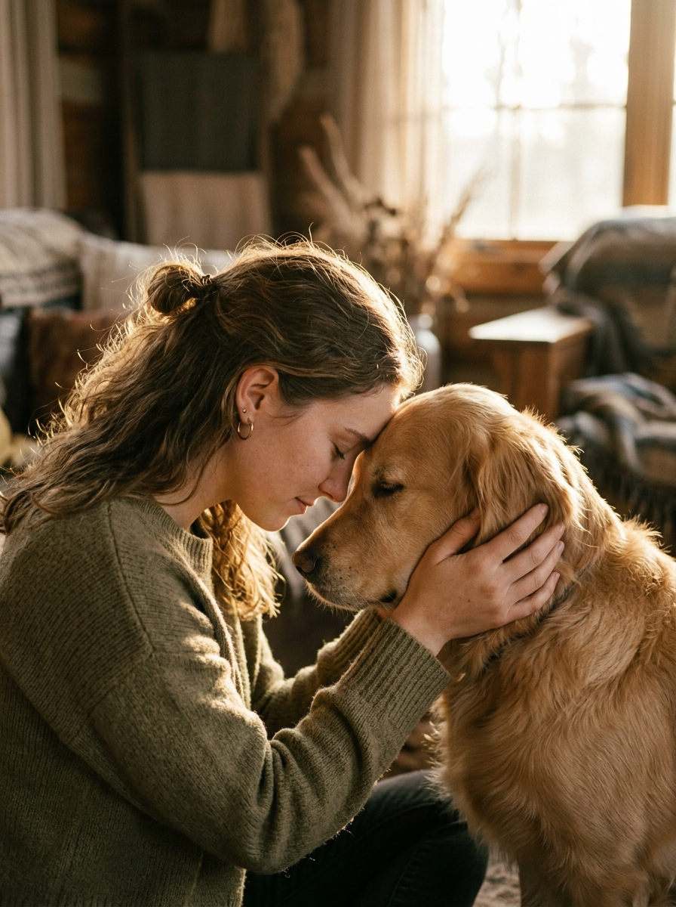
Orientamos ambos os lados da relação. Tutores ganham clareza e segurança enquanto o cão ganha estabilidade e previsibilidade.
Conheça quem estará com você em cada etapa
Trabalho conjunto e dedicado. Experiência presencial em Mato Grosso e consultoria online para qualquer lugar do mundo.
João Eduardo
Adestrador & Educador Canino PresencialResponsável pelos atendimentos presenciais em domicílio, condomínios e praças em Cuiabá e Várzea Grande. Atua diretamente nos momentos de maior desafio: na recepção de visitas, na hora da refeição e na condução suave da guia.
- Atendimento prático no ambiente real da sua residência
- Treinamento de foco e passeio sem tensão na guia
- Orientação detalhada e personalizada para os tutores
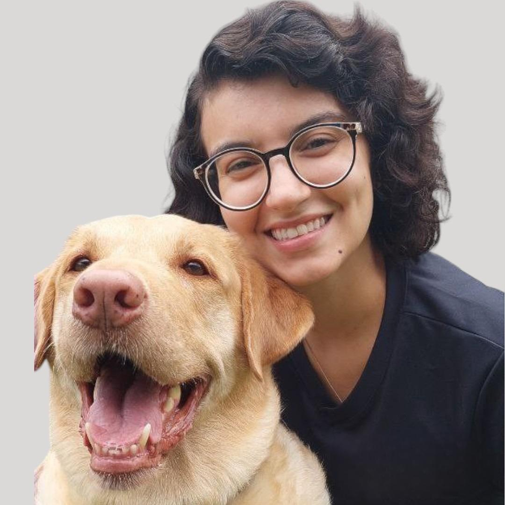
Consultoria Online Brasil & ExteriorNicolle
Consultora Comportamental Canina OnlineResponsável pelas consultorias online personalizadas com didática acolhedora e suporte constante. Avalia a dinâmica da casa através de vídeo e gravações para orientar o plano de manejo com precisão.
- Atendimento online individual para famílias em qualquer região
- Estruturação da rotina sanitária de xixi/cocô e filhotes
- Suporte direto para tirar dúvidas pelo WhatsApp
Nossas Soluções e Capacitação
Treinamento domiciliar presencial, consultoria remota e curso profissionalizante.
Atendimento Presencial Domiciliar
Encontros práticos com o Adestrador João Eduardo no seu endereço em Cuiabá ou Várzea Grande.
- Diagnóstico no ambiente real da sua casa
- Treino prático de rua, guia e portão
- Envolvimento e capacitação da família
Consultoria Comportamental Online
Orientação por videochamada com a Adestradora Nicolle para famílias em qualquer lugar do Brasil e mundo.
- Sessões ao vivo focadas na sua rotina
- Análise de vídeos e registros do pet
- Plano de manejo estruturado e claro
Formação de Adestradores
Capacitação completa para quem deseja ingressar na carreira de adestramento com base ética e científica.
- Teoria moderna sobre aprendizagem canina
- Prática supervisionada com cães reais
- Como conduzir atendimentos com clientes
Descubra a solução ideal para o seu cão
Responda 3 perguntas rápidas para receber uma orientação precisa de atendimento.
1. Qual a idade do seu cão?
A fase de vida determina as prioridades de manejo e desenvolvimento.
2. Qual o principal desafio hoje?
O que mais gera estresse ou desgaste na rotina da família?
3. Onde você mora?
Para identificarmos a modalidade presencial ou online.
Carregando orientação...
Analisando respostas...
Falar com o Especialista no WhatsAppTire suas principais dúvidas
Transparência total sobre nosso método, prazos e funcionamento dos atendimentos.
O atendimento presencial com o Adestrador João Eduardo atende as cidades de Cuiabá e Várzea Grande, em Mato Grosso, tanto em residências quanto em condomínios e praças. Já a consultoria comportamental online com a Adestradora Nicolle atende famílias de todo o Brasil e do exterior.
Sim. O atendimento acontece onde os comportamentos realmente se manifestam: dentro de casa, na entrada, nos momentos de refeição e nas ruas do seu próprio bairro durante o passeio.
Sim! Não trabalhamos no formato de levar o cão embora e devolver pronto. O cão aprende pelas experiências cotidianas, portanto capacitamos você a conduzir a rotina com consistência.
Com certeza. Cães de qualquer idade aprendem novos comportamentos e novas associações quando o ambiente e as motivações são alinhados adequadamente.
O acompanhamento pode iniciar logo após a chegada ao novo lar (em torno de 50 a 60 dias de vida), período ideal para sanitário, mordidas e socialização preventiva.
Não. Não utilizamos punições físicas, intimidação ou ferramentas aversivas baseadas em medo ou dor. Toda a nossa prática é fundamentada em reforço positivo e manejo inteligente.
Quer entender o que está acontecendo com o seu cão?
Converse com nossa equipe no WhatsApp sem compromisso. Ouviremos a realidade da sua rotina e recomendaremos o melhor caminho para uma convivência tranquila.
Conversar no WhatsApp